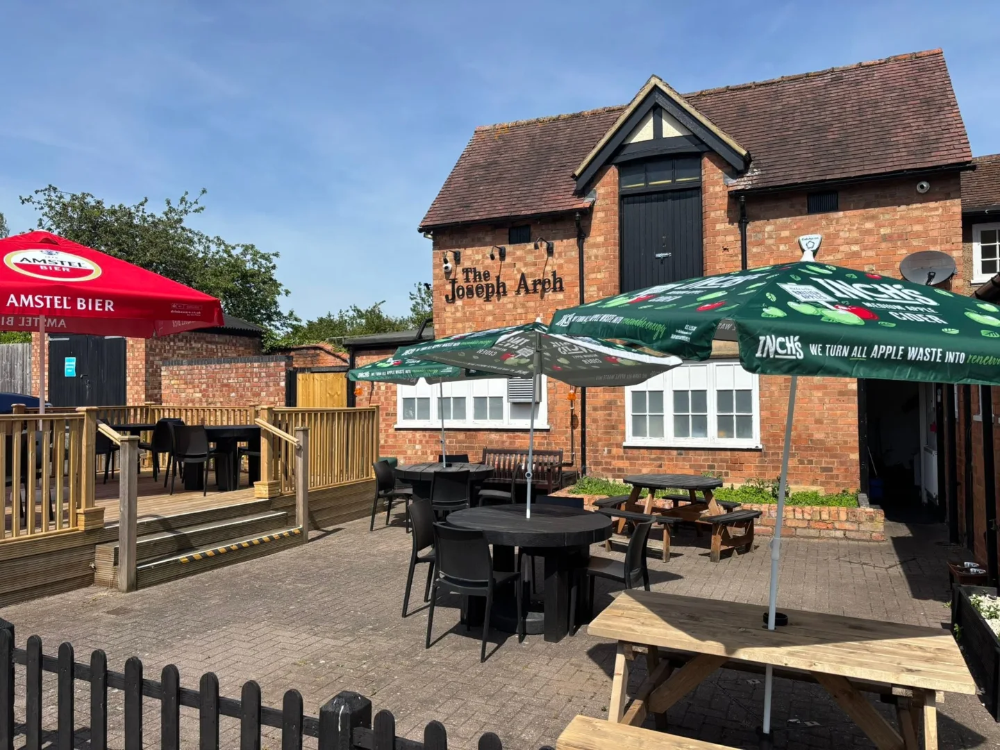

Come on in
Make yourself at home
Whether you're joining us for a drink or sitting down to eat, we'd love to see you.
Find us in BarfordJust around
7 Bridge Street
Barford, Warwickshire
CV35 8EH Find us on Facebook
Just around
the corner
Right in the heart of Barford village.
The Joseph Arch7 Bridge Street
Barford, Warwickshire
CV35 8EH Find us on Facebook
When to visit
Opening hours
| Monday | Closed |
|---|---|
| Tuesday | 12 noon – 10pm |
| Wednesday | 12 noon – 10pm |
| Thursday | 12 noon – 10pm |
| Friday | 12 noon – 11pm |
| Saturday | 12 noon – 11pm |
| Sunday | 12 noon – 9pm |
Bank holiday hours may vary. Opening hours are from the latest published venue listings; it's worth checking with the pub before travelling.
Food service hours
| Monday | Closed |
|---|---|
| Tuesday | 12 noon – 9pm |
| Wednesday | 12 noon – 9pm |
| Thursday | 12 noon – 9pm |
| Friday | 12 noon – 9pm |
| Saturday | 12 noon – 9pm |
| Sunday | 12 noon – 6pm |
Kitchen hours were announced at reopening in April 2026 and should be confirmed before a special visit.

The heart of the villageCome for one
Come for one
Stay for more
You'll find the pub in the centre of Barford, a short distance from Warwick and Stratford-upon-Avon. Call ahead about dining, larger groups, dietary requirements or anything else you need to know.
Give us a call